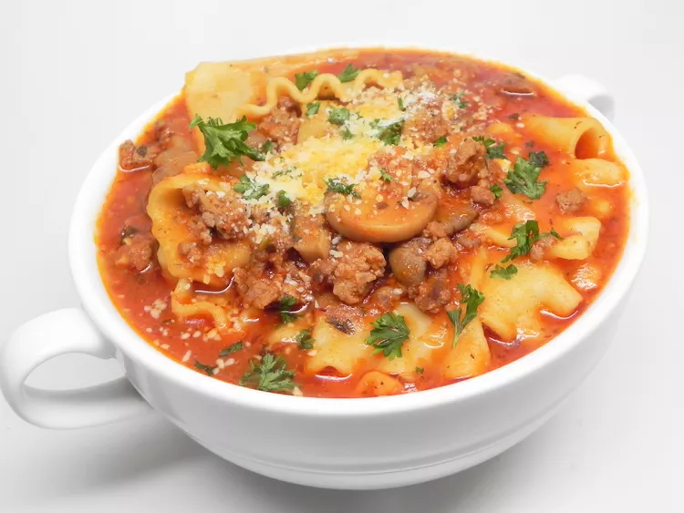

Instant Pot Lasagna Soup

Ingredients
- 1 (4 ounce) mild Italian sausage link, casing removed
- 1 pound ground sirloin
- 1 tablespoon olive oil
- 1 cup finely chopped onion
- 1 tablespoon garlic, minced
- 1 (32 ounce) can low-sodium chicken broth
- 24 ounces marinara sauce
- 8 lasagna noodles, broken into pieces
- ½ teaspoon salt
- ½ teaspoon freshly ground black pepper
- 6 teaspoons grated Parmesan cheese
Steps
- Turn on a multi-functional pressure cooker (such as Instant Pot) and select Sauté function. Add sausage and ground beef to the pot and until browned, about 5 minutes. Drain and discard grease and set meat aside. Add olive oil and swirl to insure the bottom of the pot is evenly coated. Add onion and cook until just soft, but not brown, about 5 minutes. Stir in garlic and cook until just fragrant, about 1 minute.
- Pour in chicken broth and deglaze the pot, scraping up the brown bits from the bottom. Pour in marinara sauce. Add meat mixture and season with salt and pepper. Stir to combine. Add lasagna noodles, making sure that they are completely submerged in sauce. Close and lock the lid. Select high pressure according to manufacturer's instructions; set timer for 3 minutes. Allow 10 to 15 minutes for pressure to build.
- Release pressure carefully using the quick-release method according to manufacturer's instructions, about 5 minutes. Unlock and remove the lid. Taste and adjust salt, if necessary. Ladle into bowls and top each with 1 teaspoon Parmesan cheese.